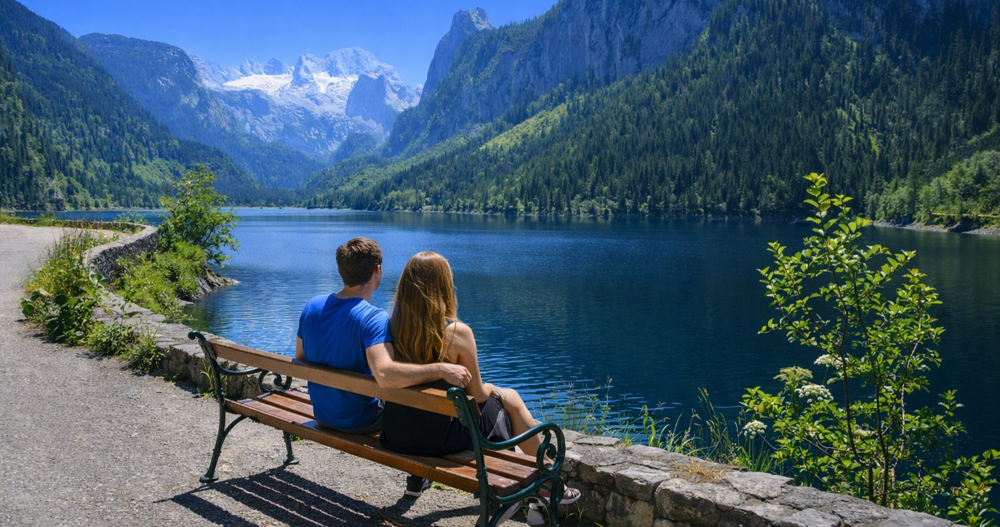

Sasfészek túra
DAY03 3. Gosau-völgy (A Dachstein előszobája)
🏠 Főoldal
📋 Lista nézet
3. Gosau-völgy (A Dachstein előszobája)
47.584321, 13.535874

A völgy kőzetei fosszíliákban gazdag tengeri üledékeket is tartalmazhatnak. A táj karakterét a zöld legelők és a háttérben feltűnő Dachstein tömb kontrasztja adja.
🧭 Navigáció
📋 Lista nézet
🏠 Főoldal